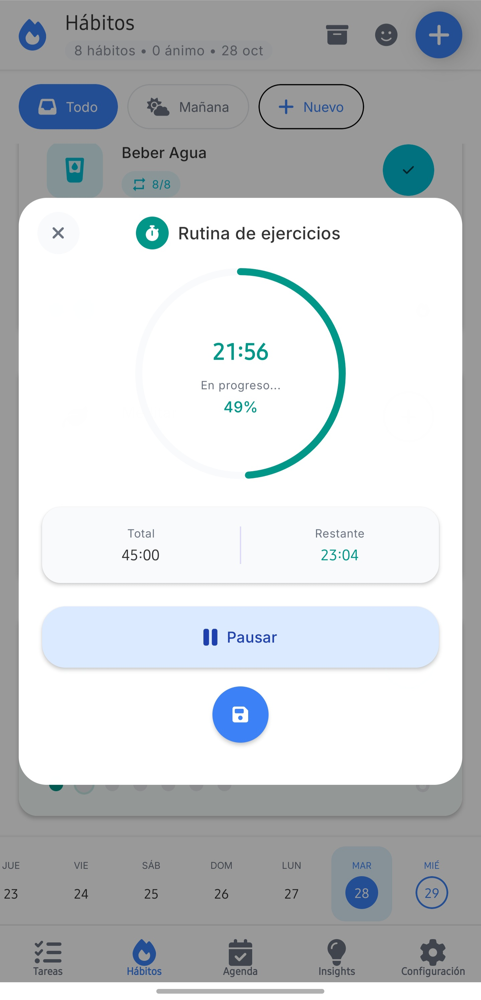
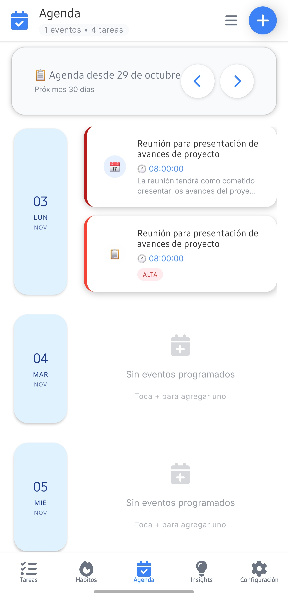
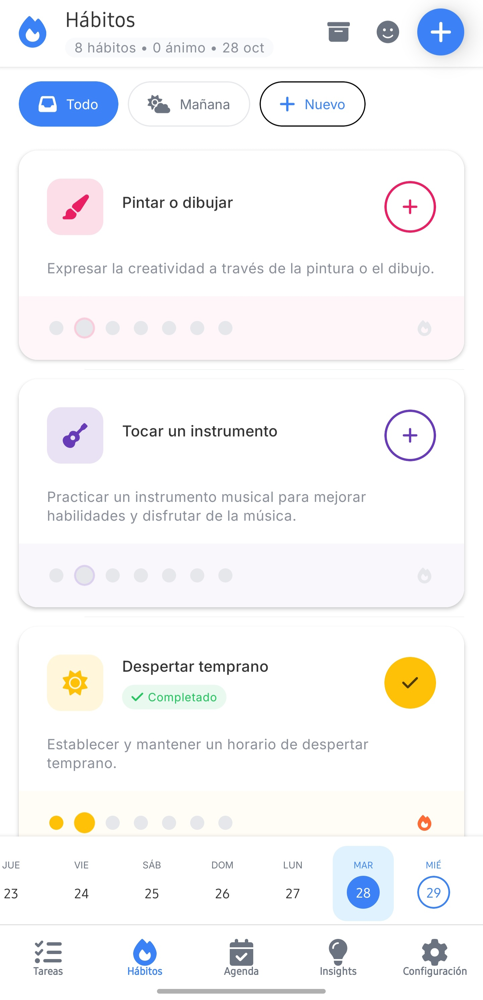
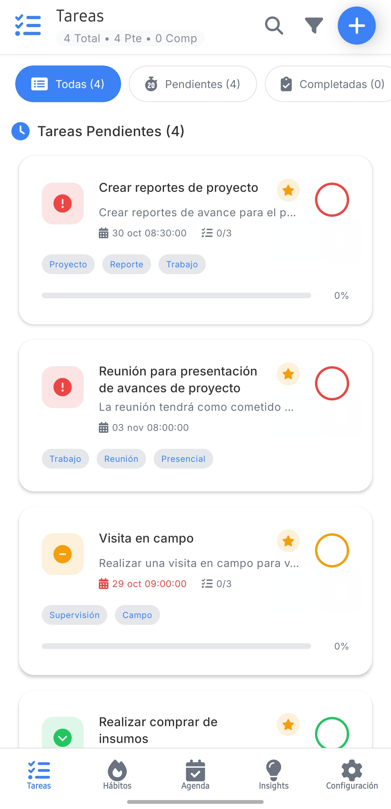
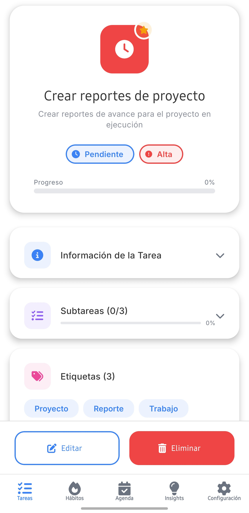
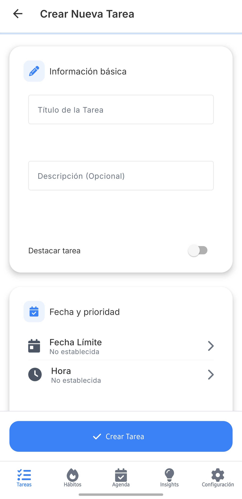
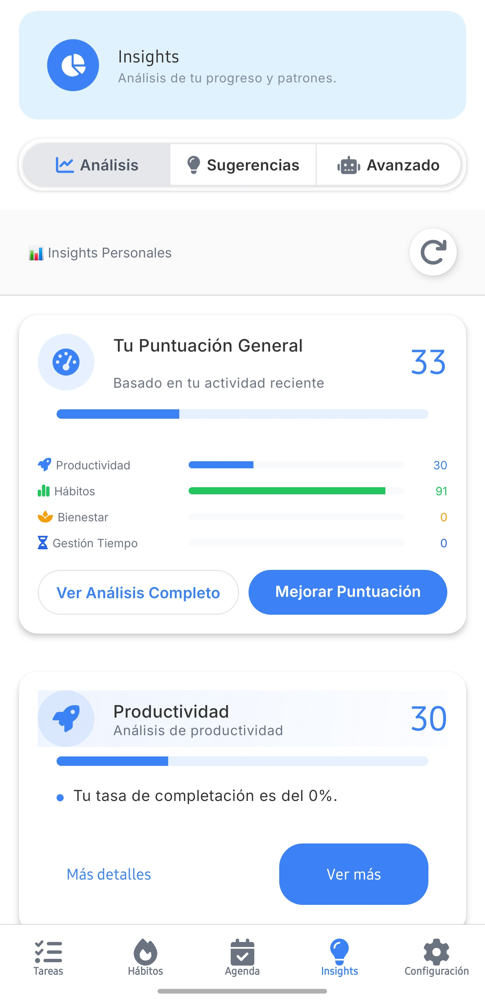

Organiza tu vida, potencia tu bienestar
KronosApp es tu asistente personal inteligente para gestionar tareas, hábitos y eventos, todo en un solo lugar.
Comienza Gratis
Todo lo que necesitas para ser más productivo
Desde tareas simples hasta proyectos complejos, KronosApp te ofrece las herramientas para organizarlo todo.
Gestión de Tareas Avanzada
Crea tareas con subtareas, prioridades y fechas límite. Filtra, busca y organiza tu día con facilidad.
Seguimiento de Hábitos
Define, sigue y analiza tus hábitos. Visualiza tu progreso con rachas, tasas de éxito y gráficos detallados.
Registro de Ánimo
Conecta tus emociones con tus actividades. Registra tu estado de ánimo y descubre patrones entre tu bienestar y tu productividad.
Insights con IA
KAI analiza tu progreso y te da una puntuación global, identificando tendencias y áreas de mejora.
Calendario Integrado
Tu centro de mando unificado. Visualiza eventos y tareas en vistas de agenda, día, semana y mes.

Un Calendario que lo Entiende Todo
Organiza tu día, semana y mes con una claridad sin precedentes. El calendario de KronosApp no solo gestiona tus eventos, sino que integra tus tareas para darte una visión completa de tus compromisos.
- Múltiples vistas (Agenda, Día, Semana, Mes) para adaptarse a tu flujo de trabajo.
- Crea eventos detallados con recordatorios, categorías, etiquetas y repetición.
- Filtra para ver solo eventos, solo tareas, o todo junto.
- Interfaz intuitiva con gestos como deslizar para eliminar y tarjetas de acción rápida.
Construye Hábitos, Mide tu Bienestar
KronosApp te da el poder de forjar nuevos hábitos positivos o romper con los negativos. Con nuestro sistema flexible, puedes:
- Elegir desde plantillas populares o crear hábitos 100% personalizados.
- Configurar recordatorios, metas, temporizadores Pomodoro y más.
- Analizar tu rendimiento con gráficos de rachas, consistencia y éxito semanal.
- Registrar tu estado de ánimo y niveles de energía para entender tu progreso integral.

Una Interfaz Diseñada para Ti
Limpia, intuitiva y potente. Así es la experiencia KronosApp.




KAI Insights: Tu Coach Personal de IA
KAI va más allá de un simple asistente. Es un motor de inteligencia que analiza tu actividad para ofrecerte una visión clara de tu progreso y recomendaciones personalizadas para alcanzar tu máximo potencial.
Análisis Integral
KAI evalúa tu productividad, hábitos, bienestar y gestión del tiempo para darte una Puntuación General. Identifica tendencias, fortalezas y áreas de oportunidad con gráficos detallados.
Sugerencias Inteligentes
Recibe recomendaciones proactivas y dinámicas generadas por IA. Desde optimizar un hábito hasta implementar una nueva técnica de productividad, cada sugerencia es accionable y está adaptada a ti.
Chat Avanzado
Conversa con KAI para obtener respuestas complejas, generar resúmenes de tu semana o pedirle que cree tareas y eventos por ti. Tu productividad, ahora conversacional.